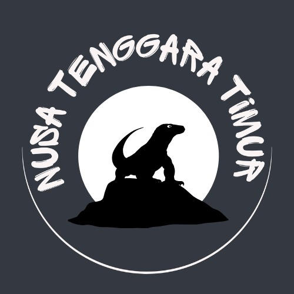
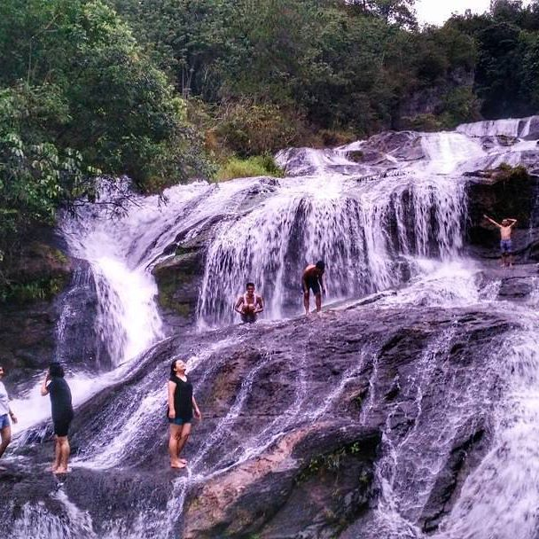
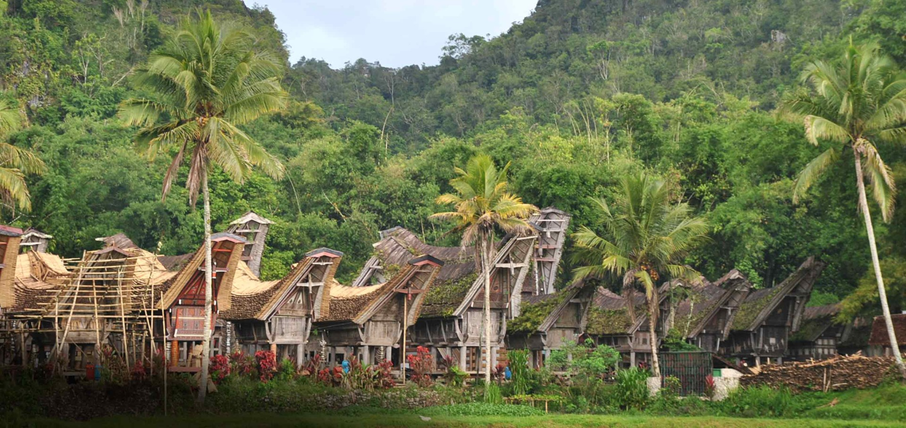
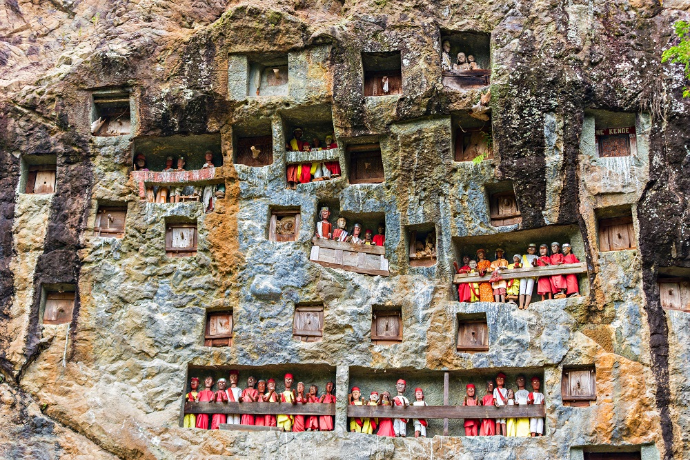
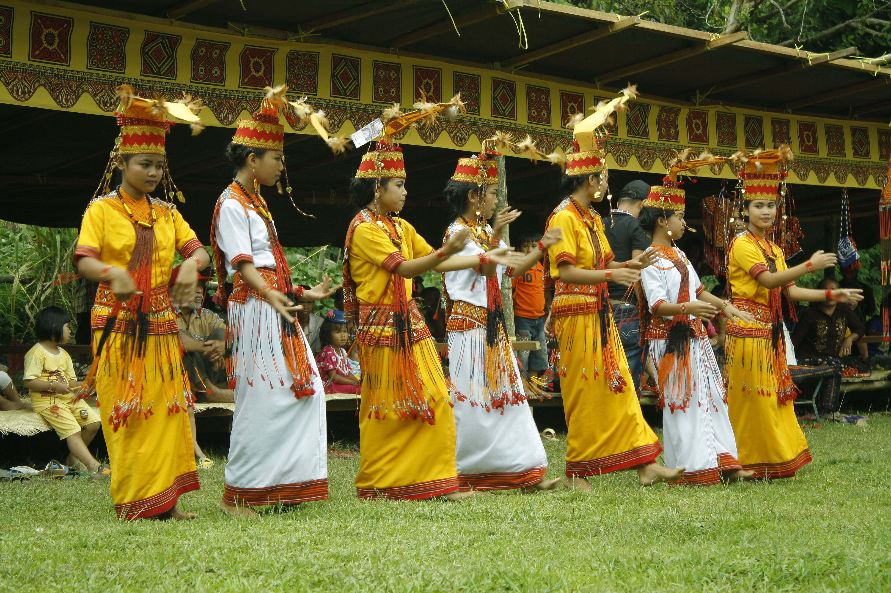
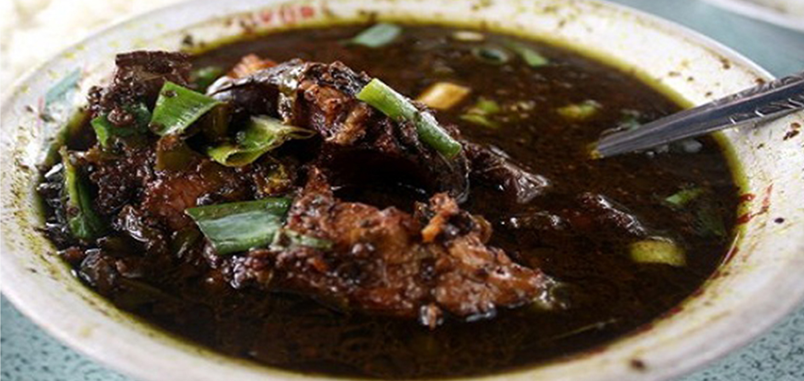
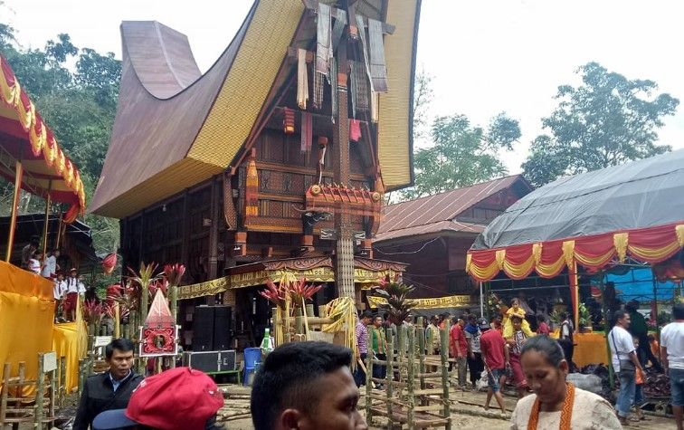

Judul Gambar
×
Ini adalah penjelasan untuk gambar yang dipilih.

Beranda
Wisata
Galeri
(current)
Lokasi
Kontak
SELAMAT DATANG DI WEBSITE
TOUR & TRAVEL NUSA TENGGARA TIMUR
Selengkapnya
Wisata
Wisata Alam
Wisata Budaya
Wisata Kuliner
Pulau Komodo
Selengkapnya
Danau Kelimutu
Selengkapnya
Pantai Lasiana
Selengkapnya
Pulau Padar
Selengkapnya
Pink Beach
Selengkapnya
Air terjun Noelaku
Selengkapnya
Goa Batu Cermin
Selengkapnya
Gunung Mutis
Selengkapnya
Tari Bonet
Selengkapnya
Tari Cerana
Selengkapnya
Upacara Bijalungu Hiu Paana
Selengkapnya
Ritus Pasola
Selengkapnya
Tari Caci
Selengkapnya
Se'i sapi
Selengkapnya
Kain tenun ikat
Selengkapnya
Akksara lota
Selengkapnya
Catemak Jagung
Selengkapnya
Ikan Lawar
Selengkapnya
Sambal Lu'at'
Selengkapnya
Tapa Kolo
Selengkapnya
Jawada
Selengkapnya
Roti Kampyang
Selengkapnya
Kue Jintan
Selengkapnya
Ubi Nuabosi
Selengkapnya
Galeri

Alam
Lihat

Objek Wisata
Lihat

Budaya
Lihat

Kesenian
Lihat

Kuliner
Lihat

Acara
Lihat
Lokasi
Nusa Tenggara Timur
Nusa Tenggara Timur
Kontak
Media Sosial
Tentang
Wisata
Galeri
Lokasi
Hubungi Kami
Kirim